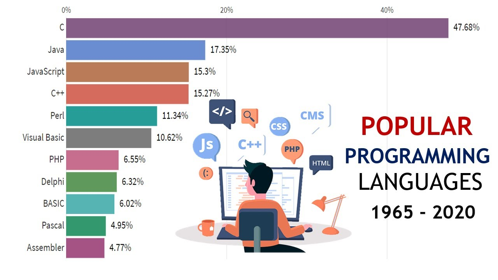
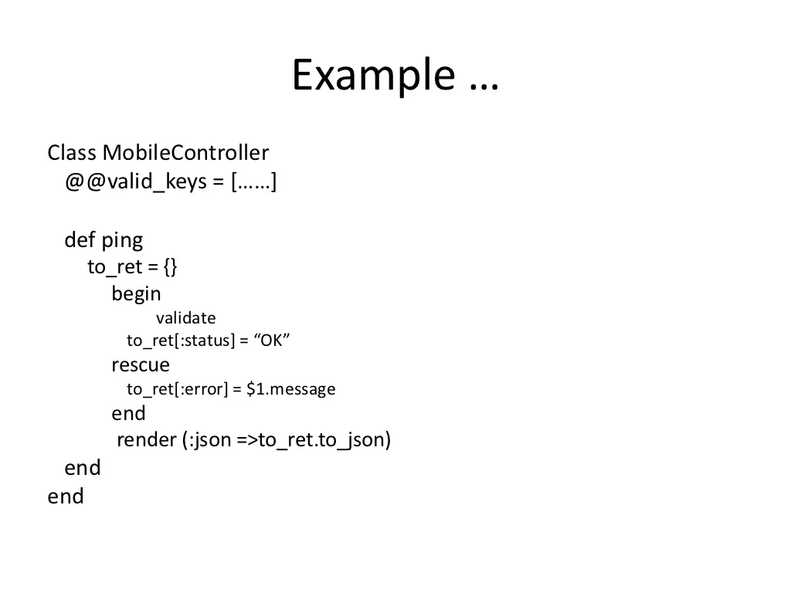
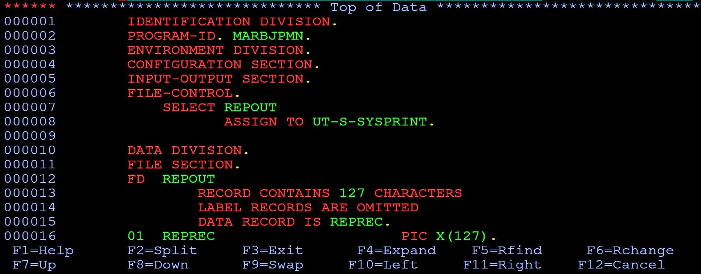
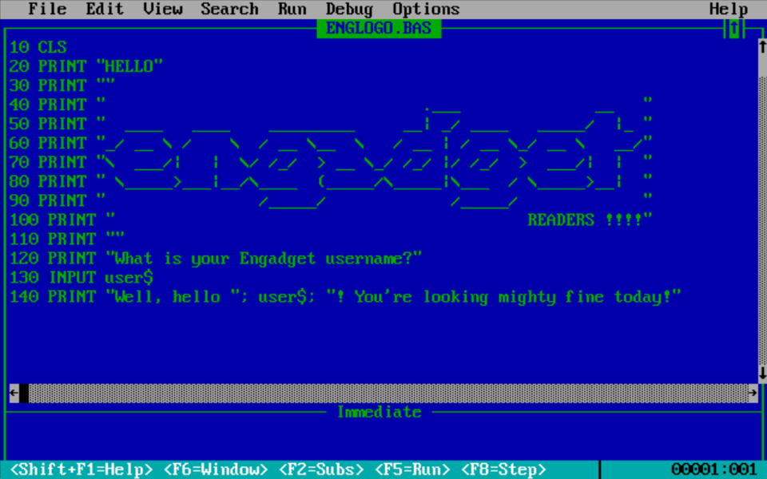
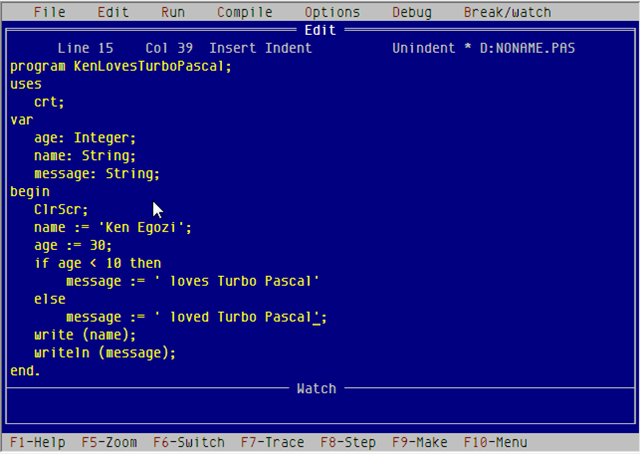
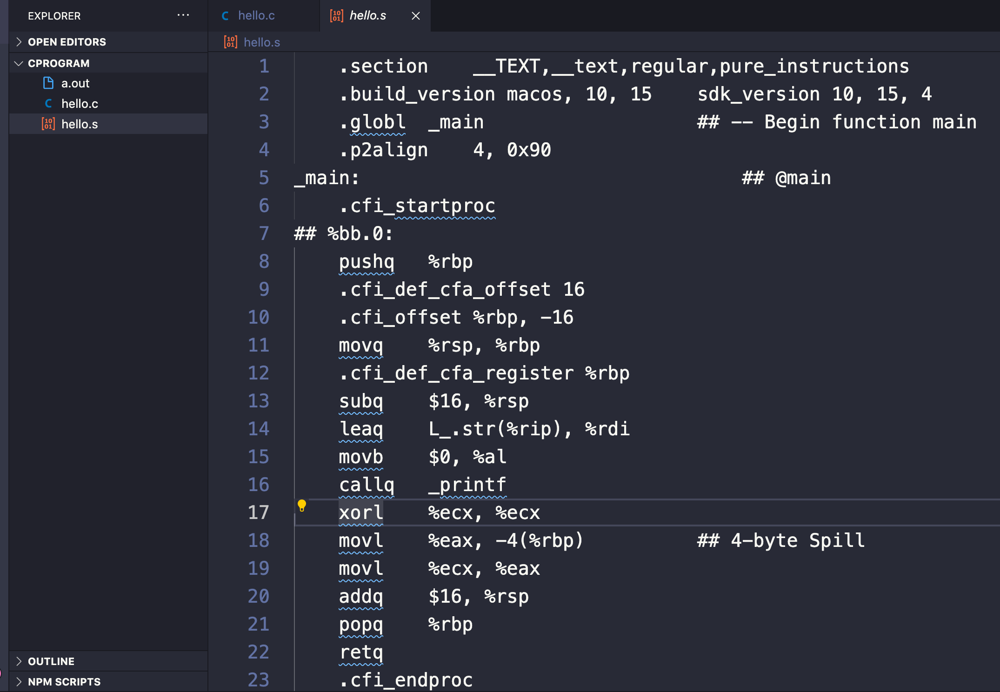
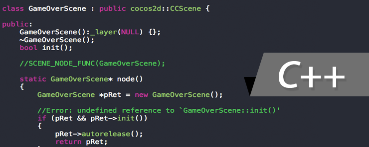
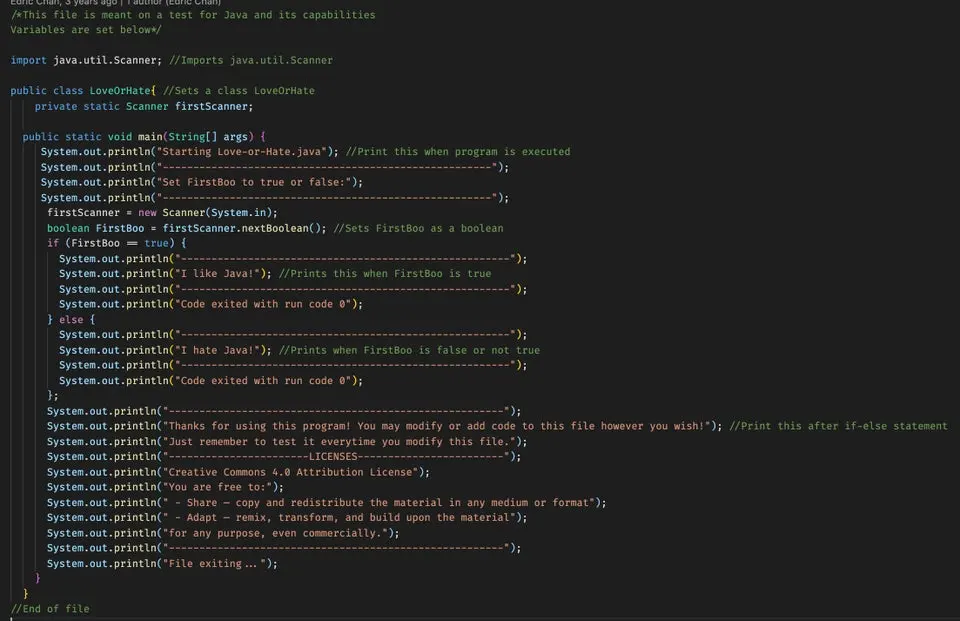

Computer Programming language.
Introduction To Programming Language.
A program is a list of instructions in a logical sequence which are needed to be performed in order to accomplish a given task or solve a given problem on a computer. The process by which a user specifies to the computer in a particular programming language what s/he wants the computer to do is referred to as programming. Since the computer cannot think on its own, it is the programmer that will give the detailed steps, as well as the sequence in which steps are to be taken, in solving the problem.
What is Programming Language?
Programming Language is a set of specialized notations for communicating with the computer system.
Evolution of Programming Languages
Hundreds of programming languages have been developed in the last fifty years. Many of them remained in the labs and the ones, which have good and more general features, got recognized. Every language that is introduced comes with features upon which its success is judged. In the initial years, languages were developed for specific purposes, which limited their scope. However, as the computer revolution spread affecting common man, the language needed to be molded to suit all kinds of applications. Every new language inherited certain features from existing languages and added its own features. The chronology of developments in programming languages is given below:-
- The first computer program was made by Lady Lovelace Ada Augusta in 1843 for an analytical engine application.
- Konrad Zuse, a German, started a language design project in 1943. He finally developed plankalkul, programming calculus, in 1945. The language supported bit, integer, floating-point scalar data, arrays, and record data structures.
- In early 1950s, Grace Hopper and his team developed A-O Language. During this period, assembly language was introduced.
- The major milestone was achieved when John Backus developed FORTRAN (Formula Translator) in 1957. The FORTRAN data is oriented around numerical calculations. It was a major step towards development of full-fledged programming language including control structures, conditional loops, and input and output statements
-
ALGOL was developed by GAMM (German Society of Applied mathematics) and ACM (Association of Computing Machinery) in 1960
 -
COBOL (Common business oriented Languages) was developed for business purpose by US department of defense in 1960.
 -
BASIC (beginner’s All- purpose symbolic instruction code) was developed by John Kemeny and Thomas Kurtz in 1960’s
 -
PASCAL was developed by Niklaws around 1970’s. PASCAL was named after French philosopher, Blaise pascal.
 -
In early 70’s Dennis Ritchie developed C at Bell laboratories using some of the B languages. Features.
 -
C++ was developed by Bjarne Stroustrup in early 1980s extending features of C and introducing object –oriented features
 -
Java, originally called Oaks, was developed by Sun Microsystems of USA in 1991 as general purpose language. Java was designed for the development of software for consumer electronic devices. It was a simple, reliable, portable and powerful language.

A language may be extremely useful for one type of applications. For example, a language such as cobol, is useful for business application but not for embedded software. On the basis of application, programming languages can be broadly classified as
- BUSINESS = COBOL
- SCIENTIFY = FORTRAN
- INTERNET = JAVA
- SYSTEM = C, C++
- Artificial intelligence (AI): LISP and PROLOG
Features of Good Programming Languages
The features of one programming language may differ from the other. One can be easier and simple while another can be difficult and complex. The program written for a specific task may have few lines in one language while many lines in another. The success and strength of a programming language is judge with respect to standard features. To begin the language selection process, it is important to establish some criteria that makes a language good. A good language choice should provide a path into the future in a number of important ways.
- Ease of use: This is the most important factor in choosing a language. The language should be easy in writing codes for the programs and executing them. The ease and clarity of a language depends upon its syntax. It should be capable enough to provide clear, simple, and unified set of concepts. The vocabulary of the language should resemble English (or some other natural language). Any concept that cannot easily be explained to amateurs should not be included in the language. Part-time programmers do not want to struggle with difficult concepts; they just want to get a job done quickly and easily.
- Portability: The language should support the construction of code in a way that it could be distributed across multiple platforms (operating systems). Computer languages should be independent of any particular hardware or operating systems, that is, programs written on one platform should be able to be tested or transferred to any other computer or platform and there it should perform accurately.
- Reliability: The language should support construction of components that can be expected to perform their intended functions in a satisfactory manner throughout its lifetime. Reliability is concerned with making a system failure free, and thus is concerned with all possible errors. The language should have the support of error detection as well as prevention. It should make some kinds of errors impossible for example, some errors can be prevented by a strict syntax checking. Apart from prevention, the language should also be able to detect and report errors in the program. For example errors such as arithmetic overflow and assertions should be detected properly and reported to the programmers immediately so that the error can be rectified. The language should provide reliability by supporting explicit mechanism for dealing with problems that are detected when the system is in operation.
- Safety: Safety is concerned with the extent to which the language supports the construction of safety critical systems, yielding systems that are fault tolerant, fail-safe or robust in the face of systemic failures. The system must always do what is expected and be able to recover from any situation that might lead to a mishap or actual system hazard. Thus, safety tries to ensure that any failures that occurs result in minor consequences, and even potentially dangerous failures are handled in a fail-safe fashion. Language can facilitate this through such features as built-in consistency checking and exceptional handling.
- Performance: In some applications, performance is a big issue. By performance, we mean that the language should not only be capable of interacting with the end users, but also with the hardware. The language should also support software engineering mechanism, discouraging or prohibiting poor practices and supporting maintenance activities. This is the main reason why C language is used for developing operating systems.
- Cost: Cost component is a primary concern before deploying a language at a commercial level. It includes several costs such as; program execution and translation cost, program creation, testing and use, program maintenance
- Compact Code: A good language should also promote compact coding, that is, the intended operations should be coded in a minimum number of lines. Even if the language is powerful, and is not able to perform the task in small amount of codes, then it is bound to be unpopular. This is the main reason of C language’s popularity over other languages in developing complex applications. Larger codes require more testing and developing time, thereby increasing the cost of developing an application.
- Maintainability: Creating an application is not the end of the system development. It should be maintained regularly so that it can be modified to satisfy new requirement or to correct deficiencies. Maintainability is actually facilitated by most of the languages, which makes it easier to understand and then change the software. Maintainability is closely linked with the structure of the code. If the original code were written in an organized way (Structural Programming) then it would be easy to modify or add new changes.
- Provides Interface To Other Language: From the perspective of the language, interface to other language refers to the extent to which the selected language supports interfacing feature to other languages. This type of support can have a significant impact on the reliability of the data, which is exchanged between applications, developed with different languages. In case of data exchange between units of different languages, without specific language support, no checking may be done on the data or even on their existence. Hence, the potential for unreliability becomes high-modern day languages have come a long way and most of the languages provide interface support for other languages.
- Concurrency Support: Concurrency support refers to the extent to which inherent language supports the construction of code with multiple threads of control (also known as parallel processing). For some applications, multiple threads of control are very useful or even necessary. This is particularly true for real time systems and those running on architecture with multiple processors. It can also provide the programmer with more control over its implementation. Other features include Reusability and Standardization.
Classification and Generations of Programming Languages
The computer language is machine language that is 0’s and 1’s. Communication with the computer is via machine language. This language is cumbersome and not easy to remember, which lead to the development of assembly language and high-level language that are more English like in nature. The classification and generation of computers is based on machine language, assembly language and High-level language.
Computers understand only one language and that is binary language (the language of 0’s and 1’s) also known as machine language. In the initial years of computer programming, all the instructions were given in binary form only. Although these programs were easily understood by the computer, it proved too difficult for a human being to remember all the instructions in the form of 0’s and 1’s. Therefore, the computer remained a mystery to a common man until other languages such as assembly and high –level languages were developed which were easier to learn and understood. These languages use commands that have some degree of similarity with English (such as if else, exit)
Programming languages can be grouped into three major categories: machine language, assembly (low-level) language and high–level languages.
- Machine language: Machine language is the native language of computers. It uses only 0’s and 1’s to represent data and the instructions written in this language, consists of series of 0’s and 1’s. Machine language is the only language understood by the computer. The machine language is peculiar to each type of computer.
- Assembly (low-level) language: Assembly language correspondences symbolic instructions and executable machine codes and was created to use letters instead of 0’s and 1’s to run a machine. It is called low-level because of its closeness to the machine language.
- High-level language: these languages are written using a set of words and symbols following some rules similar to a natural language such as English. The programs written in high –level languages are known as source programs and these programs are converted into machine- readable from by using compilers or interpreters